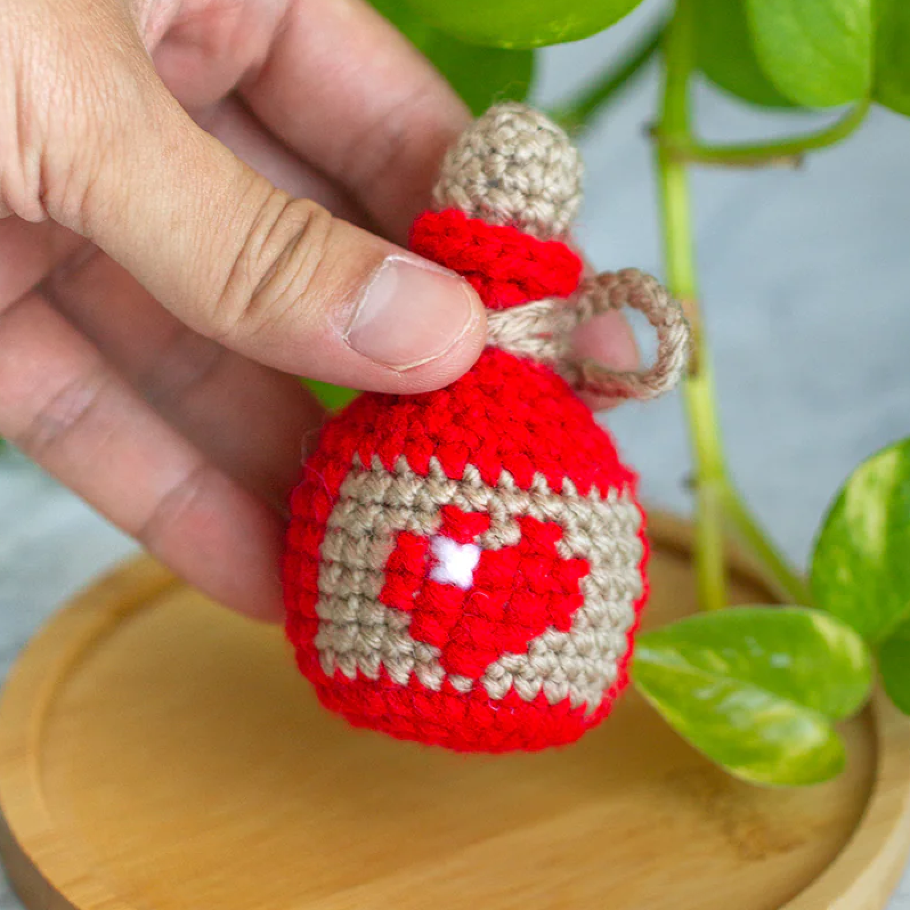

I'm a senior product designer with 9 years of experience driven by curiosity! I believe good design starts with understanding the people you're designing for through empathy, research, and validation. I love stepping into unfamiliar territory and learning new things, whether it's a new industry or technology.
Outside of design, I've played tennis for 20 years and coached for 10. These days, you'll find me colour grading, crocheting, travelling, learning about aviation through flight simulators, or using Claude Code to build personal projects.

I'm currently exploring roles where I can tackle problems, collaborate with thoughtful teams, and keep learning. If you're building something challenging and meaningful, let's talk!
LinkedIn